Projet de la liste d'ouverture conduite par
Armand DOUIN
❝
Chères Limouriennes, Chers Limouriens,
Une commune comme la nôtre, ce n'est pas seulement un territoire ou une
administration, c'est avant tout un lien humain. Limours possède une
Histoire, une identité, un visage qui lui est propre. Elle est le fruit
de générations d'habitants, d'engagements souvent discrets ainsi que de
parcours de vie qui lui donnent corps.
L'état d'esprit unique créé, entretenu et développé par l'ensemble des
listes Aimons Limours qui se sont succédées à sa tête
depuis vingt-cinq ans, respecte profondément cette histoire.
Indépendance, respect, solidarité et cohérence dans
l'action sont notre ADN.
Cette dynamique humaine a donné naissance à de très
nombreuses réalisations qui font aujourd'hui de Limours une commune
enviée où il fait bon vivre, à proximité du Pôle Paris - Saclay.
C'est dans cet esprit, entouré d'une équipe expérimentée et
renouvelée, que j'ai l'honneur de solliciter vos suffrages dans le
cadre des élections municipales des 15 et 22 mars prochains.
Né à Limours il y a 26 ans, j'y ai grandi, fréquenté ses associations et
suivi l'ensemble de ma scolarité avant d'obtenir un Master d'Histoire.
Très tôt, je me suis intéressé à la vie publique et à la pratique
concrète de la démocratie locale. Cet engagement m'a conduit, en 2020, à
devenir le plus jeune conseiller municipal de Pecqueuse, commune voisine
où vivent mes parents, avec la volonté sincère de servir l'intérêt
général.
En venant à votre rencontre et dans un document à paraître
prochainement, notre équipe aura l'occasion de vous présenter son projet
pour la mandature à venir.
C'est un projet rassembleur, ambitieux, raisonnable et enthousiaste,
fidèle à l'identité de Limours.
À très bientôt.
Limours quand ville et nature ne font qu'un
Les caractéristiques principales de la commune et sa localisation
privilégiée lui confèrent bon nombre d'avantages importants et
d'atouts précieux. Nous entendons encore les renforcer.
Urbanisme et aménagement du territoire
Depuis 25 ans, en termes d'urbanisme, une politique volontariste a
été mise en œuvre. Elle peut être résumée par la formule
« Limours, un pied à la ville et l'autre à la campagne ».
La traduction concrète de cette formule se retrouve dans l'actuel
Plan Local d'Urbanisme (PLU) dont le socle est le Projet
d'Aménagement et de Développement Durable (PADD), véritable
préambule dans lequel sont définies les grandes orientations.
C'est grâce à cette politique d'aménagement du territoire que
Limours a entretenu un cadre de vie propice à l'épanouissement de
sa population.
Atteindre tout comme préserver cet objectif n'est pas une évidence.
Face à la pression foncière et aux multiples tentatives législatives
visant à retirer aux communes la maîtrise de leurs sols, l'équipe
Aimons Limours reste et restera vigilante et
extrêmement déterminée à défendre la singularité de
Limours ainsi que celle de ses 3 hameaux :
Roussigny, Chaumusson et Le Cormier.
En effet, dès les années 2000, la commune a choisi d'orienter sa
stratégie d'urbanisme autour du développement durable. C'est grâce à
cette action que Limours a su maîtriser l'évolution de sa population
pour parvenir à 6 648 habitants en 2025.
Pour mesurer cette maîtrise, il suffit de comparer deux périodes
équivalentes de 23 ans :
de 1978 à 2001, la population a augmenté de 2 270 habitants,
de 2001 et 2025, la hausse n'a été que de 177 habitants.
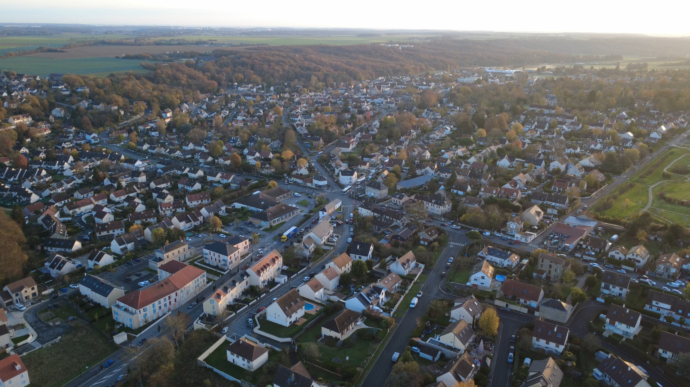
Biodiversité, trame verte, bleue et noire
Depuis les années 2000, Limours a toujours veillé scrupuleusement à
maintenir un équilibre dans sa forme urbaine.
En effet, sur les 1425 hectares de superficie communale, les espaces
agricoles représentent 56%, les espaces boisés 23%, la zone
urbanisée ne représente, elle, que 21% du territoire.
56%Agricole
23%Boisé
21%Urbanisé
Cependant, l'enjeu d'aujourd'hui n'est plus seulement celui de
préserver l'environnement mais bien
d'assurer la pérennité des conditions essentielles à la
vie, dans un contexte de changement climatique accéléré.
C'est précisément l'objectif de notre trame verte (milieux naturels
et semi-naturels terrestres) de notre trame bleue (réseaux
aquatiques et humides) ainsi que de la trame noire (protection de la
biodiversité nocturne de la pollution lumineuse) prérequis
nécessaires au maintien de la nature en milieu urbain.
Entretenir et mettre en valeur les parcs communaux, continuer le
développement du verger pédagogique, confirmer les pratiques
vertueuses dans l'entretien des espaces verts sont autant d'exemples
qu'illustrent cette volonté.
La Prédecelle, traversant notre commune sur 5 km,
fait également l'objet d'une attention particulière. La gestion de
ce patrimoine hydraulique est désormais confiée au Syndicat de
l'Orge (SYORP) qui possède une ingénierie et des compétences plus en
rapport avec l'ampleur de la tâche que nécessitent
son entretien et sa sécurisation.
Ces attentions toutes particulières à notre environnement et à son
équilibre ont permis et permettront de répondre à la question
fondamentale :
comment associer le développement humain de notre commune tout en
préservant la biodiversité ?
Entretien du patrimoine
(bâti, voirie, réseaux divers)
Bâti
L'entretien du patrimoine communal constitue une priorité qui
relève de la gageure si l'on considère le net recul des moyens
financiers mis à disposition des communes. C'est ainsi, par
exemple, que le choix de la rénovation des deux groupes scolaires
communaux fut guidé par la combinaison entre la maîtrise
démographique et l'anticipation de la crise énergétique.
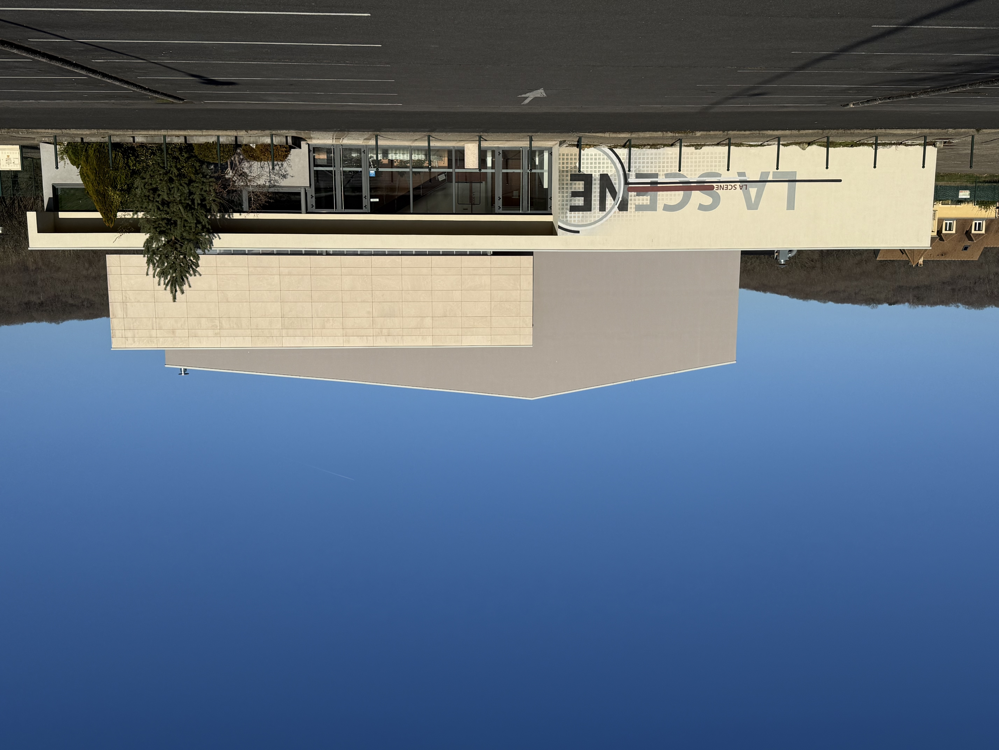
Néanmoins,
le maintien en capacité opérationnelle de l'ensemble des 25
bâtiments communaux constitue pour nous une impérieuse
nécessité.
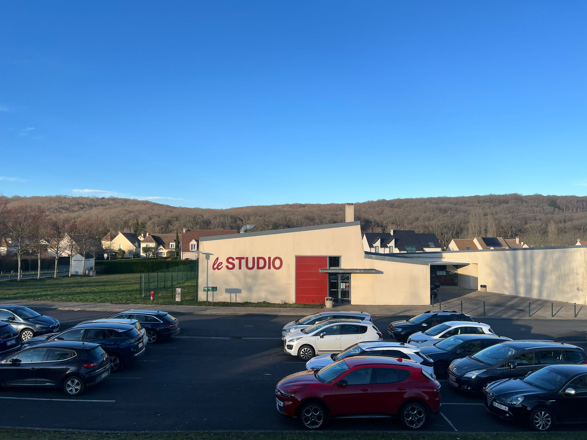
Voirie
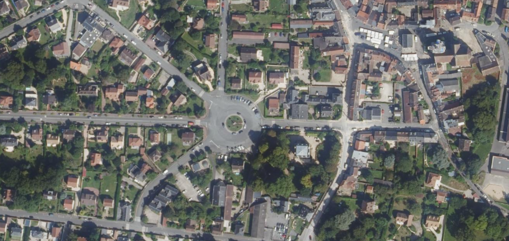
Avec la responsabilité de 57 km de voirie à entretenir, la commune
doit faire face à un double défi : la mobilisation des budgets
nécessaires en période de crise et la programmation la plus
adaptée dans le temps. Ces contraintes peuvent être génératrices
de frustrations tant
l'ampleur de la tâche dépasse les capacités budgétaires
annuelles de la commune.
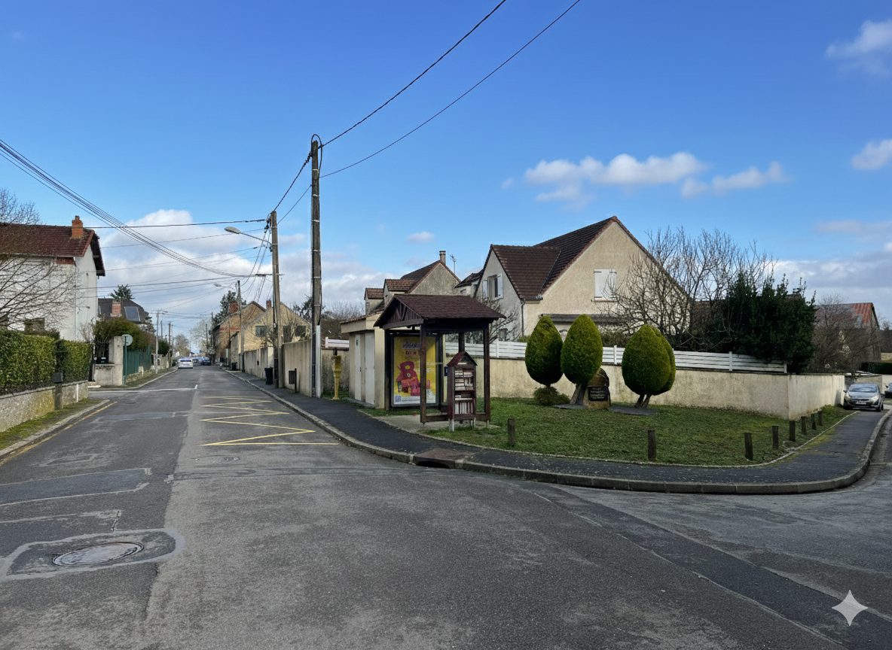
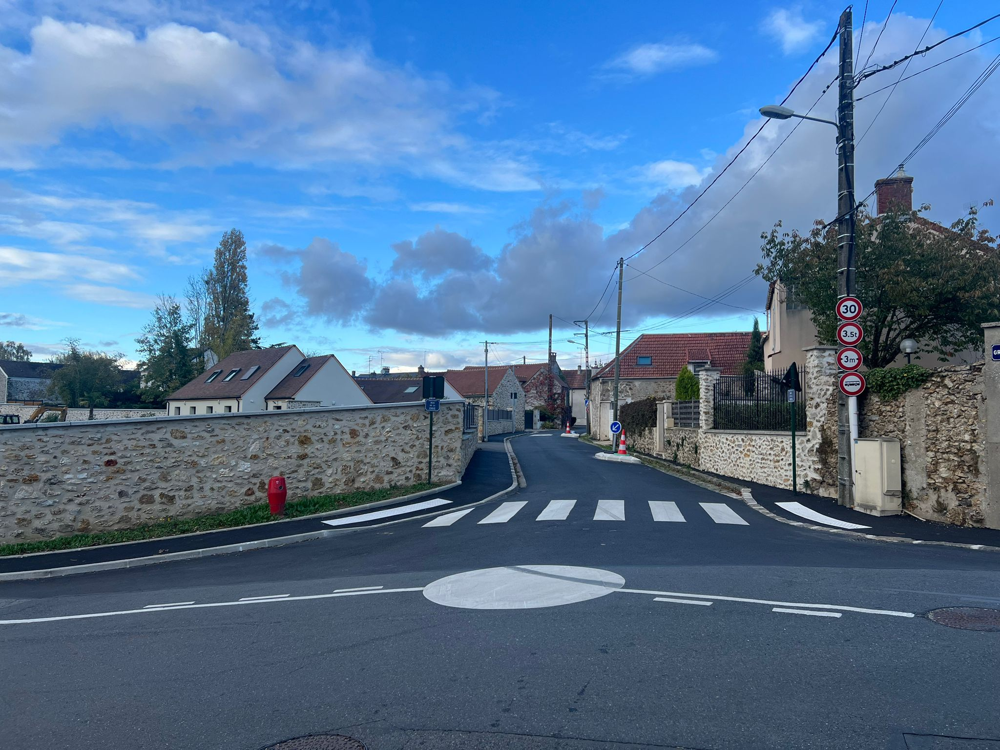
Par ailleurs, traversée par deux axes départementaux majeurs, la
ville travaille en étroite collaboration avec les services du
Département afin d'améliorer durablement la qualité et la sécurité
de ces voies structurantes.
Réseaux souterrains
Si de nombreuses infrastructures publiques sont visibles, d'autres
ne le sont pas et, pour autant, forment un patrimoine invisible
mais pourtant indispensable.
Entretenir ce patrimoine est une tâche complexe et technique qui
nécessite une attention du quotidien.
Le Système d'Information Géographique de la Ville
(SIG) permet d'appréhender :
45 kmde réseau d'eau potable
63 kmde réseau d'assainissement, dont 35 pour les eaux pluviales
et 28 pour les eaux usées
34 kmde linéaire pour le réseau d'éclairage public
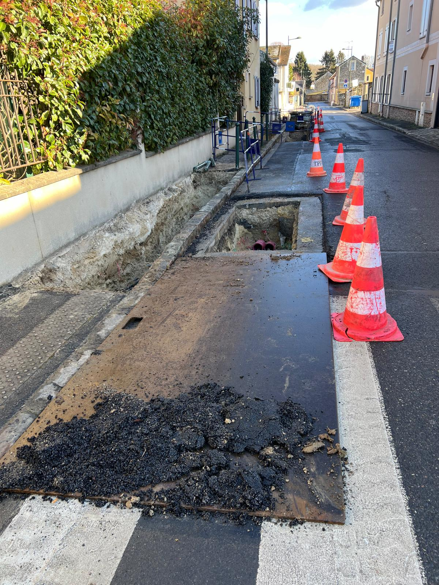
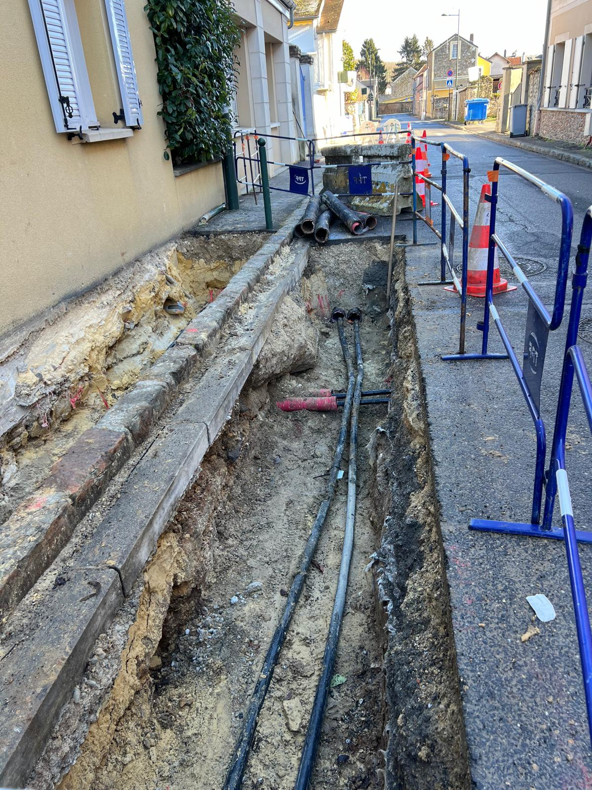
Là encore, c'est en partenariat étroit avec les différents acteurs
institutionnels possédant les compétences et l'ingénierie
nécessaires, que nous parviendrons à atteindre des objectifs
toujours plus exigeants.
Limours une ville à taille humaine
Une commune est, avant tout, un territoire ou une administration.
C'est aussi un lien humain, un lien entre des femmes et des hommes,
entre des familles et des générations. Une commune est avant tout, le
premier visage de l'action publique, l'échelon de proximité par
excellence.
L'éducation, une priorité incontournable
Avec la famille, l'école incarne dans la construction de tout
individu, la première des fondations. C'est la raison pour laquelle
Limours a fait de l'éducation la première de ses priorités en
veillant à maintenir un investissement constant dans ses groupes
scolaires.
L'école primaire joue un rôle essentiel : elle transmet les savoirs
fondamentaux, favorise l'intégration et contribue à l'inclusion de
tous les enfants. Au-delà des apprentissages, elle représente la
première étape du parcours vers l'autonomie, l'insertion
professionnelle et la pratique citoyenne.
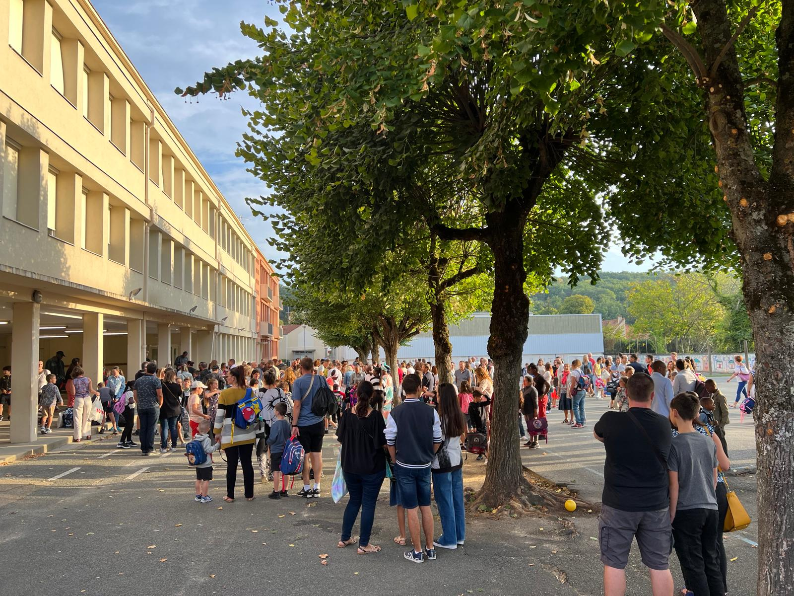
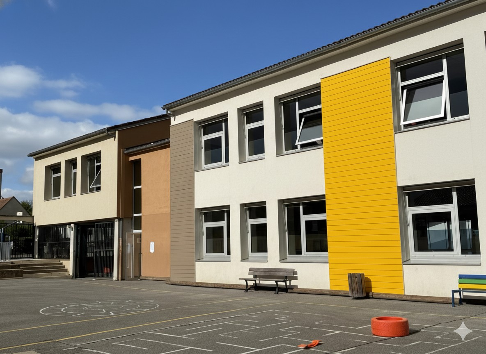
Elle est le fruit d'une volonté politique claire de la part de
l'équipe municipale : intégrer dans le cursus pédagogique de chaque
enfant une ouverture à la Culture et au Sport.
Cette distinction attribuée par les ministères de la Culture et de
l'Éducation nationale, particulièrement difficile à obtenir, acte le
travail quotidien conduit en collaboration avec l'intervenant
musicien et l'intervenante sport, financés par la commune. Nous
persévérons dans cette voie !
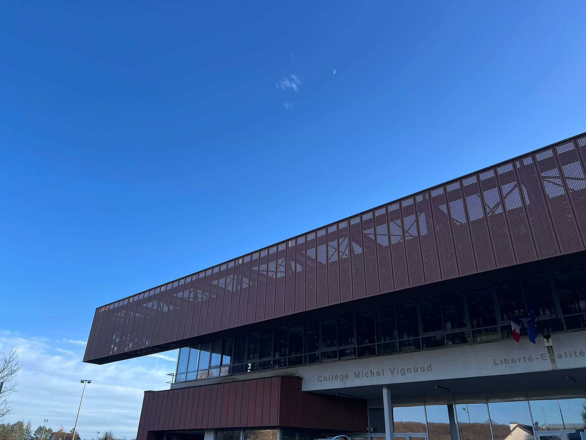
Cette priorité est avant tout une promesse faite à toutes les
familles.
Celle d'un territoire où l'on grandit bien, où l'on apprend avec
confiance et où chacun peut construire son avenir.
Entre activités pédagogiques et projets structurants, tout est mis
en œuvre au niveau communal pour que chaque enfant s'engage dans la
vie avec un socle de connaissances solides.
Par ailleurs, un travail constant a permis d'obtenir en 2022, le
label national « 100 % EAC ». L'Éducation Artistique et Culturelle
est dispensée en complément de l'instruction scolaire de la
maternelle au lycée.
Pour favoriser l'épanouissement
Apprendre, travailler, être citoyen et participer à la vie
collective ne peuvent pleinement se déployer que si chacun peut
s'épanouir pleinement dans sa commune.
Cela est possible à Limours grâce au très important vivier
associatif et son tissu étendu de bénévoles.
Apportant son soutien constant, la municipalité est une actrice
majeure dans la mise en valeur de ce réseau associatif.
Culture
L'équipe Aimons Limours continuera de porter une ambition claire :
faire de la culture un moteur d'un vivre-ensemble, accessible à
tous.
Cette vision se traduit par la mise en place d'événements qui
rassemblent :
Limours à l'UniS'Sons, où habitants,
associations et collectifs créent ensemble spectacles, musiques,
danses et projets intergénérationnels ;
Le Mimi Festival, rendez-vous de septembre
dédié aux enfants et aux familles ;
Le Salon du livre jeunesse qui, depuis 16 ans,
rythme la fin d'année.
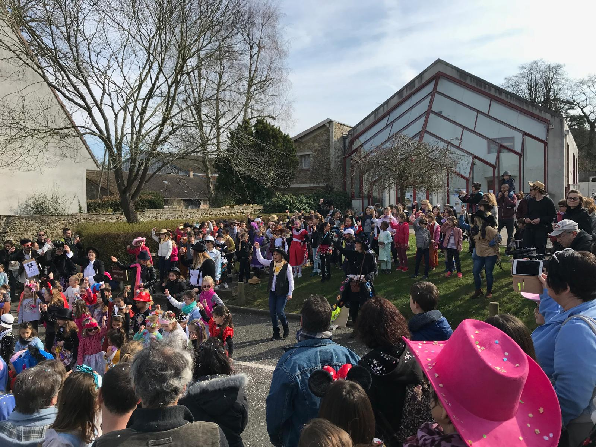
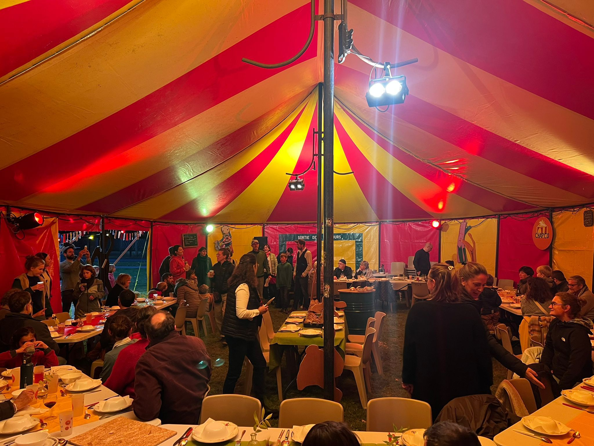
Nous continuerons d'offrir une programmation culturelle variée,
dans et hors les murs, pour permettre à chacun de trouver sa place
ou de découvrir de nouvelles formes d'expression artistique.
Cette richesse culturelle s'appuie sur un tissu d'équipements
complémentaires regroupés dans l'Espace Culturel Michel Berger
(ECMB) :
La bibliothèque, dynamique et très fréquentée,
propose lectures, ateliers, expositions, ouvrages numériques, et
organise des temps forts comme le Salon du livre jeunesse, la
Fête de la Science ou encore l'accueil d'artistes pour des
projets scolaires ;
La Grange, espace scénique en cœur de ville ;
La Scène, salle de 300 places, recevant
artistes reconnus, résidences, concerts, théâtre et danse ;
Le Studio, véritable laboratoire artistique,
propose salles de répétition, studio d'enregistrement et
accompagnement des jeunes musiciens.
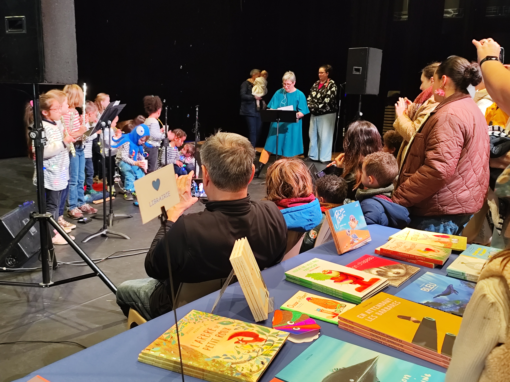
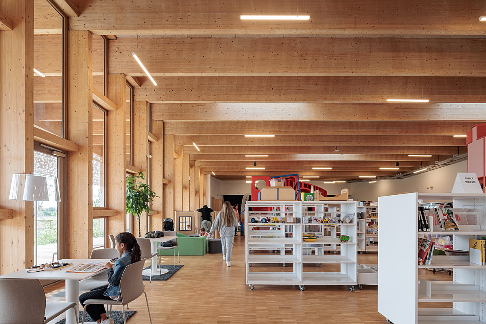
Nous nous appuierons sur un réseau solide : Collectif Culture en
Essonne, Scène de recherche de Paris-Saclay, Département de
l'Essonne, Direction Régionale de l'Action Culturelle (DRAC)
Île-de-France, et d'autres partenaires. Ces coopérations
renforceront la création, la diffusion et l'accompagnement
artistiques, faisant de Limours un
territoire culturel vivant, ouvert et partagé.
Sports
Forte de plus d'une centaine d'associations actives dans les
domaines du sport, de la culture et de la cohésion sociale, notre
commune se distingue par un tissu associatif riche, diversifié et
particulièrement dynamique. C'est un des moteurs principaux de
l'épanouissement et du lien social.
Compte tenu de sa taille, Limours dispose d'un tissu d'équipements
sportifs particulièrement complet même si la demande est en
perpétuelle développement. Largement utilisé par les nombreuses
associations de la commune, on y trouve :
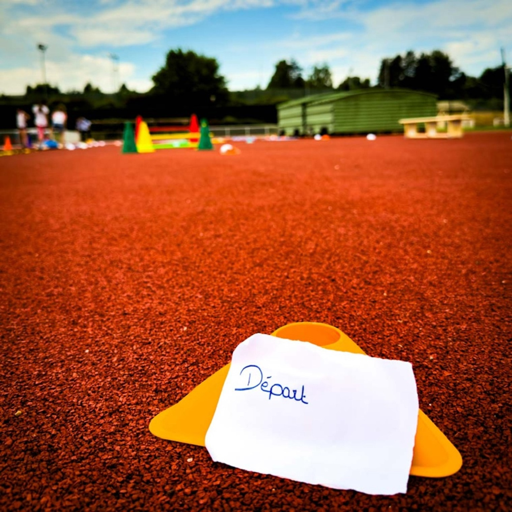
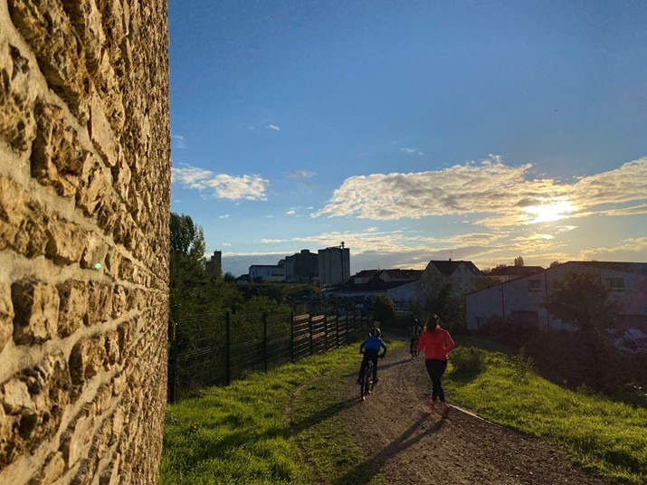
Le Parc des Sports Vincent Coupet : trois
terrains de football, une piste d'athlétisme, dix courts de
tennis dont deux couverts, deux terrains de padel, deux terrains
de pétanque, un terrain de beach-volley ainsi que deux
club-houses.
3 gymnases : le gymnase municipal et deux
équipements intercommunaux (Halle des Sports et Nautilus).
Des espaces pour les pratiques libres : un
skatepark, un bowl et deux city-stades.
2 parcours de santé : situés à l'Orée du Bois
et aux Cendrières.
De nombreux chemins de randonnée, dont un
tronçon de la Véloscénie reliant Paris au Mont-Saint-Michel.
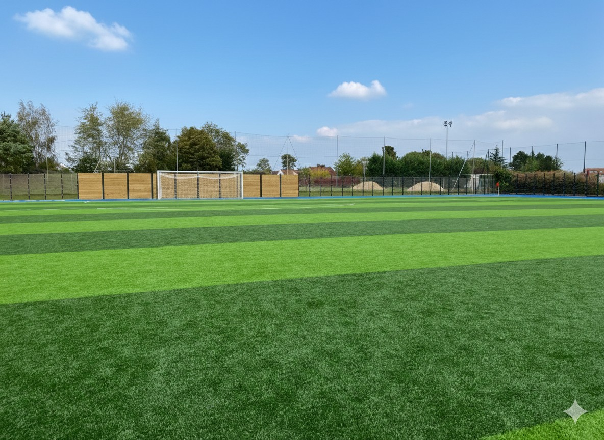
Et nourrir la cohésion sociale
Former les futurs citoyens, c'est également les accompagner dans
une intégration au collectif communal.
La cohésion sociale est une notion transversale très importante à
Limours. Le principe de Solidarité s'y inscrit dans chacun des
objectifs menés par l'équipe municipale.
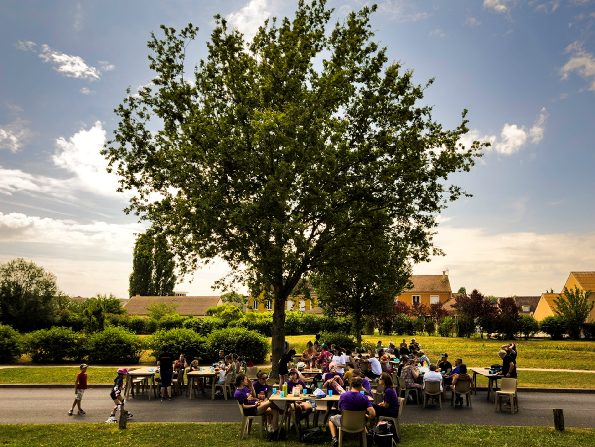
Au travers d'actions concrètes, la commune est fortement
engagée pour soutenir et accompagner des associations d'intérêt
général et social.
La semaine des Solidarités, Octobre Rose, le Studio'Café, la
Solithèque, ou bien encore le Téléthon, sont autant de marqueurs
importants de cette volonté.
Nous poursuivrons et renforcerons notre engagement en faveur de
ces évènements.
Pour toutes les générations
Maintenir un cadre de vie favorable n'est possible qu'au travers
d'une offre de services publics adaptée aux besoins de chaque
génération.
Par des infrastructures et des actions diversifiées, Limours a
toujours veillé à orienter ses politiques en faveur de l'intérêt
général. L'équipe Aimons Limours continuera d'œuvrer en
ce sens.
Petite enfance
Grâce à la volonté de la commune et aux dispositifs mis en place
avec ses partenaires institutionnels (Département, Protection
Maternelle et Infantile, Caisse d'Allocations familiales, CCPL),
Limours propose une offre de garde diversifiée :
35 places au multi-accueil communal,
répondant chaque année aux besoins d'environ 40 familles;
Des permanences hebdomadaires de la PMI dans
des locaux communaux dédiés au « Saut du Loup ».
Les accueils — communaux, intercommunaux, parentaux ou privés —
respectent les critères de taux de couverture fixés par la
Caisse d'Allocations Familiales (CAF).
Les enfants en situation de handicap bénéficient spécifiquement
d'un protocole d'accueil adapté et sont prioritaires dans les
multi-accueils.
Jeunesse
À Limours,
20 % de la population a moins de 25 ans. Bien
grandir représente un enjeu majeur pour la commune. Aussi, nous
nous engageons à cet égard, à
maintenir une offre de projet éducatif, culturel et
sportif
de qualité, proposés dès la petite-enfance jusqu'à l'âge adulte
:
Les « Rendez-vous » est un dispositif de
loisirs culturels et artistiques destiné aux jeunes de 12 à 17
ans, favorisant la participation, la créativité et la
co-construction des activités ;
Le Pass'sports jeunes offre aux 6-16 ans un
lieu convivial pendant les vacances, avec des activités
sportives encadrées et des sorties durant l'été ;
Le Centre Communal d'Action Sociale (CCAS) propose des
séjours de vacances pour les 4-17 ans, avec
une participation financière de la commune à hauteur de 20 %
du tarif de base ;
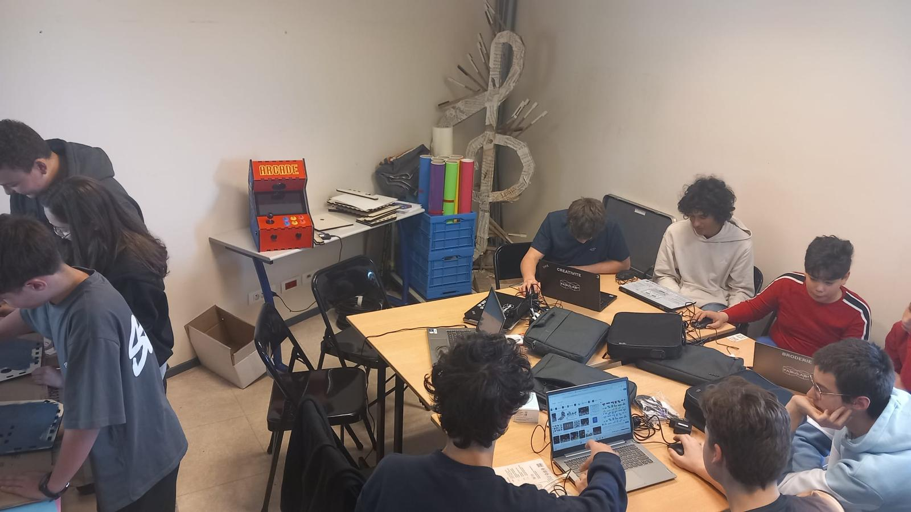
La ville encourage l'engagement des jeunes. Elle propose aussi
aux 15-18 ans de rejoindre le
dispositif « jeunes bénévoles », qui leur
permet de participer à des actions municipales adaptées en
fonction de leur âge : aide lors du carnaval, du Téléthon, ou
d'ateliers pour les plus petits et de valoriser pour leur
carrière professionnelle un engagement bénévole ;
Un engagement porté auprès du programme Eloquentia, en cofinançant le dispositif « Porter sa voix » en
partenariat avec le lycée Jules Verne et le collège Michel
Vignaud, permet aux jeunes de se former à l'expression orale.
Séniors
La commune de Limours place ses aînés, et en particulier les
plus en difficulté, au cœur de ses préoccupations. Alors que
12 % de la population a plus de 70 ans,
l'équipe Aimons Limours continuera d'adapter ses
politiques publiques pour répondre à une population senior
grandissante.
La Ville et le
Centre Communal d'Action Sociale (CCAS) ont mis
en place un éventail de services :
Repas des Aînés
Les aînés peuvent ainsi bénéficier d'un
soutien financier direct grâce au mandat
trimestriel, attribué sous conditions de ressources. Pour
favoriser le maintien à domicile en toute sécurité, des services
essentiels comme la téléassistance et le
portage de repas à domicile sont proposés.
De plus, la résidence autonomie ARPAVIE
offre un lieu de vie avec 60 logements (F1 ou F2), incluant
restauration et entretien effectués par du personnel communal
mis à disposition au travers d'une convention.
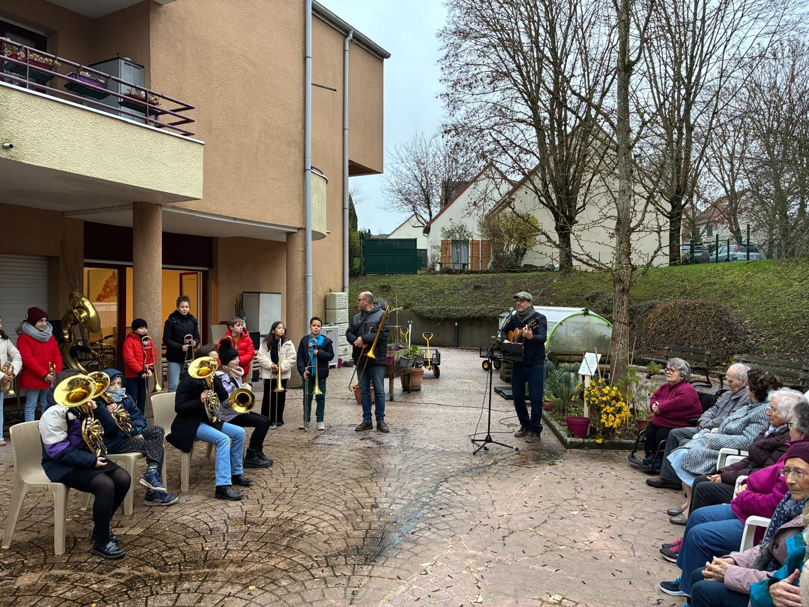
Résidence pour personnes autonomes
Enfin, le CCAS s'associe à Nord-Ouest Autonomie (NOA) et l'Aide
à Domicile en Milieu Rural (ADMR) pour des actions de
prévention cruciales (plans grand froid et
canicule) et assure chaque année un moment de partage festif
autour du repas des aînés, que les Limouriens
de 70 ans et plus peuvent choisir de prendre en commun, ou de
recevoir chez eux en colis.
Prendre soin de nos aînés grâce aux plus jeunes, c'est favoriser
le lien intergénérationnel qui fonde les bases d'une société
solidaire.
Dans une relation citoyenne
La commune est le premier échelon d'une démocratie vivante. Être
citoyen, c'est exercer des droits, mais aussi assumer des devoirs.
La démocratie ne se limite pas au vote : elle se construit et
se nourrit au quotidien par l'implication du plus grand nombre
dans la gestion de l'intérêt général.
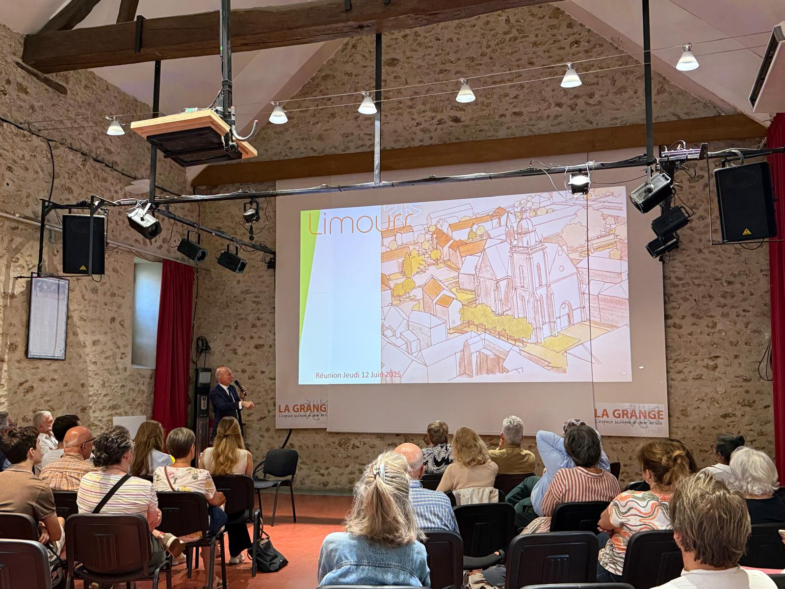
Ateliers thématiques dans le cadre de l'Agora citoyenne
C'est dans cet esprit que les différentes équipes municipales
Aimons Limours ont toujours privilégié la concertation et
une écoute attentive des habitants pour la conduite des projets
communaux. Nous nous engageons à poursuivre et à renforcer cette
démarche, en l'adaptant aux évolutions de notre société.
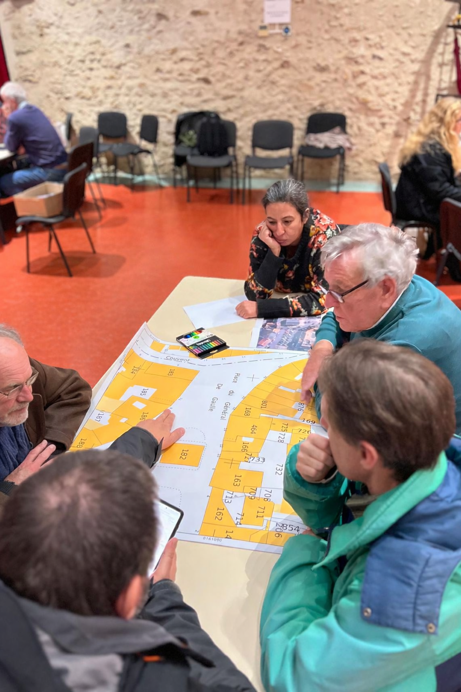
La mise en place des différents ateliers thématiques dans le cadre
de l'Agora citoyenne a permis de travailler
activement à la mise en place de concertations avec la population.
Cette démocratie participative permet à chaque citoyen, s'il le
souhaite, de contribuer concrètement aux orientations de la
commune et de devenir pleinement acteurs de la vie locale.
C'est cette même volonté qui nous permettra également de
maintenir la transparence dans la conduite des affaires
communales
au travers des divers canaux de communication (Limours Magazine,
site internet, réseaux sociaux). Ces outils sont les piliers d'un
accès direct à l'information de la commune et permettent
d'interagir en temps réel avec les citoyens.
Limours ici se prépare l'avenir
L'administration d'une commune ne se limite pas à la gestion du
quotidien. Elle s'inscrit dans un contexte complexe marqué par des
évolutions géopolitiques, sociales, économiques et environnementales,
ainsi que par des contraintes administratives et budgétaires. Face à
ces enjeux, nous devons faire preuve de prospective et d'anticipation
pour répondre aux besoins de la population.
Accès aux soins, continuum de santé
Depuis ces dernières années, nous devons faire face à l'abandon d'une politique structurante de la part de l'État en
matière de santé de proximité
et à une pénurie grandissante de médecins. Palliant ce manque, la
commune a anticipé cette situation en inaugurant le 14 octobre 2023,
la Maison de Santé Pluriprofessionnelle (MSP).
MSP inaugurée le 14 octobre 2023.
Même si la santé ne relève pas de son champ de compétence, l'équipe
Aimons Limours veillera de continuer à garantir à chaque
limourien un accès au soin de qualité.
La Maison de Santé Pluriprofessionnelle, le Centre hospitalier de
Bligny ainsi que le nouveau Groupe Hospitalier du plateau de Saclay,
constitue les trois piliers complémentaires d'un continuum de santé
permettant de
proposer à la population une offre de soin adaptée.
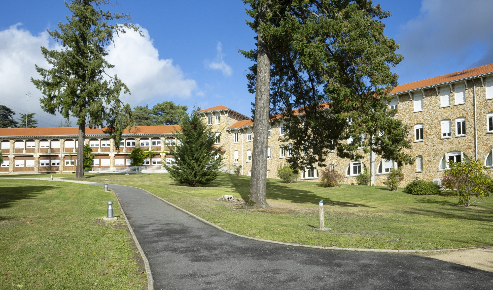
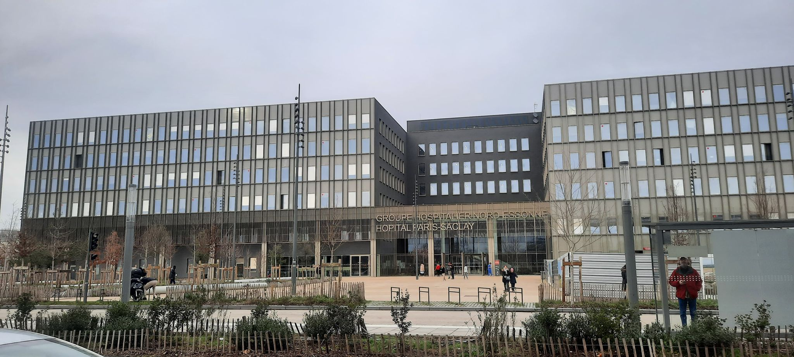
Nous continuerons d'agir également comme relais et facilitateur
auprès des acteurs locaux. En renforçant les partenariats entre
professionnels médicaux, paramédicaux et associatifs, l'équipe
Aimons Limours contribuera à une meilleure connaissance de
l'offre de soins et développera des actions de prévention avec comme
maître mot :
mieux vaut prévenir que guérir !
Un enjeu fondamental, la sécurité
Ville-centre d'un bassin de vie de près de 30 000 habitants,
correspondant au territoire de la CCPL, Limours conserve
un cadre de vie reconnu pour son calme et son caractère
paisible.
Pour autant, cette tranquillité n'exclut pas l'existence de faits de
délinquance, tels que des cambriolages, des vols ou des incivilités.
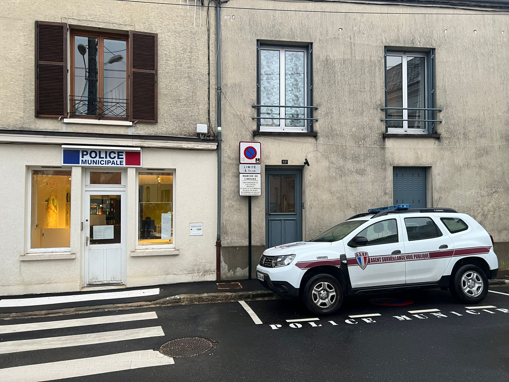
Consciente de ces enjeux,
l'équipe Aimons Limours développera l'action coordonnée
et efficace menée ces dernières années. En effet, le partenariat étroit entre le groupement de
gendarmerie de l'arrondissement de Palaiseau, la brigade de Limours
(inaugurée en 2006) et les services municipaux (notamment son Agent
de Surveillance de la Voie Publique — ASVP) constitue un atout
essentiel pour la sécurité de notre commune.
Prévention des risques
Si le changement climatique accélère le rythme des catastrophes, il
convient de se prémunir pour tenter de les anticiper. Les
inondations de ruissellement ayant frappé la commune les 9 et 17
octobre 2024, sont des exemples encore douloureux.
Aménagement des bords de la Prédecelle
Devant l'ampleur de ces phénomènes, ce n'est qu'en partenariat avec
les différents acteurs institutionnels (services déconcentrés de
l'État, syndicat hydraulique) que la commune peut déployer des
efforts soutenus pour répondre efficacement à ces risques naturels.
Le Plan Communal de Sauvegarde (PCS), le Document d'Information
Communal sur les Risques Majeurs (DICRIM) et le futur Plan de
Prévention des Risques des inondations (PPRI), qui devrait être
produit durant le premier semestre 2026 par la Préfecture,
constituent
des outils essentiels et incontournables pour permettre à la
commune de faire face aux catastrophes, malheureusement toujours
possibles.
Nous poursuivrons
les travaux d'aménagement de la Prédecelle
engagés en partenariat avec le Syndicat de l'Orge (SYORP) et chaque
membre de l'équipe Aimons Limours, restera pleinement mobilisé sur
la prévention et la sensibilisation, afin de
limiter les risques et d'éviter que de tels dégâts ne se
reproduisent.
Protéger les biens et les personnes, adopter des comportements
citoyens, se prémunir contre les catastrophes naturelles, être
vigilant les uns envers les autres, sont les prérequis pour que
Limours reste une ville où il fait bon vivre.
Nouvelles mobilités, mobilités douces
Compétence régionale et intercommunale, la thématique transport
reste excessivement délicate à gérer et réclame
la plus grande humilité face à l'ampleur de la tâche.
En effet, étant donné la localisation géographique de Limours,
garantie de notre tranquillité, la voiture individuelle constitue
l'écrasante majorité des moyens de déplacements quotidiens, avec
pour principale conséquence un réseau totalement engorgé aux heures
de pointe alors qu'il est parfaitement adapté en journée.
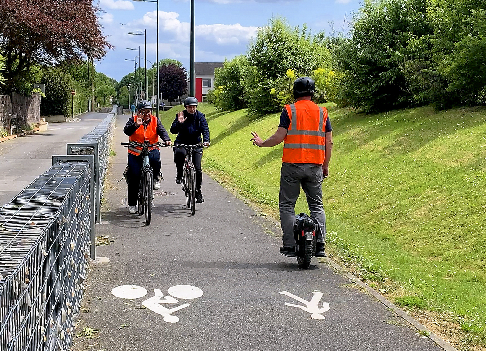
Nous travaillerons activement de concert avec la CCPL et Ile de
France Mobilités afin de maintenir voire développer l'offre du
Transport à la Demande (TAD) qui rencontre, depuis sa mise en place
en septembre 2020, un véritable succès.
La marche, le vélo, la mono-roue ou la trottinette ainsi que
les autres modes de déplacement actuels sont bénéfiques à la fois
pour la santé, l'environnement et la qualité de vie. Leur développement repose cependant sur des aménagements
structurants, coûteux, nécessitant, de la concertation et une vision
à long terme.
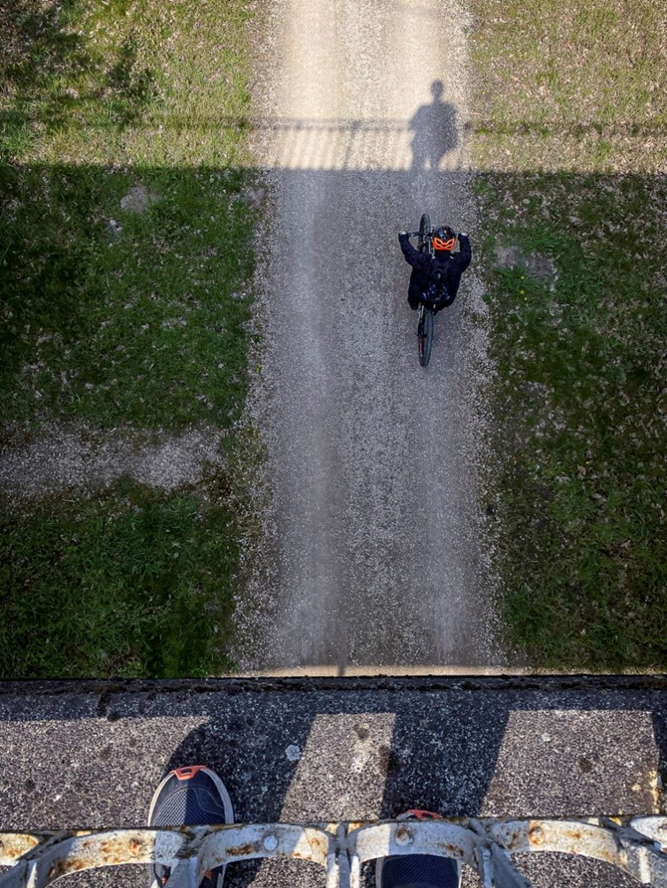
L'équipe Aimons Limours, poursuivra et renforcera une
politique cyclable cohérente, en lien étroit avec les communes
voisines et la Communauté de Communes du Pays de Limours.
À plus long terme, d'autres liaisons devront être étudiées et
inscrites dans un véritable Plan Vélo réaliste, afin de répondre aux
besoins de déplacements du quotidien et faire de la bicyclette une
alternative crédible, sûre et accessible à tous.
Transition énergétique
La transition énergétique est déjà une réalité à Limours.
En avance de phase dès 2016, la commune s'est très rapidement
engagée sur la voie de la maîtrise de ses consommations, préalable
indispensable à toute action.
Nous nous attacherons à mettre en place une programmation
pluriannuelle visant à optimiser les consommations de fluides
publics (eau, gaz, électricité). Cette démarche reposera sur 3 axes
complémentaires :
poursuivre la rénovation énergétique des infrastructures
communales, renforcer la supervision et le pilotage des
équipements consommateurs et impulser de nouveaux usages et
pratiques au quotidien, levier essentiel d'une gestion plus
responsable, sobre et durable des ressources.
Grâce à la réserve foncière communale ou sur des surfaces de toiture
déjà existantes, nous étudierons les possibilités et les
faisabilités d'implantation de panneaux photovoltaïques en vue d'une
autoconsommation collective.
Cette possibilité pourrait bénéficier à l'ensemble des
Limouriens
en diminuant les dépenses énergétiques de la commune.
Parce que le développement durable
est l'affaire de tous, la municipalité se fera également le relais
des acteurs œuvrant dans la transition énergétique auprès des
particuliers.
L'équipe Aimons Limours veillera à maintenir
son statut de laboratoire d'usages pour les nouvelles
technologies
au service de l'efficacité énergétique.
Ce positionnement permettra de tester, en conditions réelles, des
solutions innovantes et de nouveaux usages, d'en évaluer les
bénéfices techniques, énergétiques et économiques, afin d'orienter
les choix futurs vers des dispositifs performants, adaptés aux
besoins des bâtiments et des citoyens.
Prendre le virage numérique
Au cours de la dernière décennie, Limours a su prendre le virage du
numérique en modernisant ses outils et ses pratiques.
Ces évolutions ont permis de simplifier les démarches,
d'améliorer l'efficacité de l'action publique et de renforcer
l'accès aux services municipaux.
La nouvelle étape doit être celle d'un numérique plus utile, plus
lisible et plus accessible à tous. Cela passe par la refonte
complète du site internet de la commune, le développement de
services en ligne adaptés ainsi que de nouveaux canaux de
communication municipale conformes aux usages actuels.
Dans ce processus, l'intégration de solutions d'intelligence
artificielle
s'inscrira avant tout comme un outil d'appui permettant de rendre
un meilleur service public. Elle visera ainsi à accompagner les agents dans leurs missions
quotidiennes en améliorant l'efficacité des processus, en réduisant
le temps consacré à certaines tâches répétitives et en facilitant
l'accès à l'information.
Parce que la transition numérique ne doit laisser personne de côté,
la commune accompagnera les habitants qui en ont le
plus besoin,
afin de réduire la fracture numérique et garantir
un accès équitable aux services publics.
Le numérique et les nouvelles technologies ne doivent pas
remplacer l'humain, mais le soutenir dans ses missions en devenant une véritable
intelligence augmentée. C'est ce que nous défendrons à travers la
mise en place d'actions concrètes en veillant à piloter son
utilisation. Il restera un outil au service du citoyen et de
l'intérêt général.
Dynamisme économique
Même si la compétence développement économique échoie à la CCPL, la
commune restera un acteur majeur dans le soutien à l'activité
économique locale, qu'il s'agisse de la très haute technologie avec
Thalès, du commerce de proximité, de la grande distribution sans
oublier l'indispensable activité agricole.
Les atouts géographiques et organisationnels que la commune a su
mettre en valeur depuis 2001, confèrent à Limours
une diversité et une attractivité économique importantes.
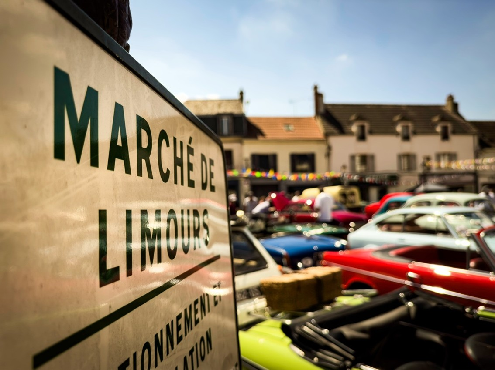
Respectant nos orientations de développement durable, nous nous
inscrivons dans une démarche de soutien à l'économie et à la
consommation locale au travers d'actions concrètes :
Par l'accompagnement au développement de l'attractivité du
commerce du Centre-Ville, des Arcades et du quartier Est ;
En facilitant la consommation locale et en mettant en valeur
l'offre commerciale. C'est finalement toute la collectivité qui
bénéficie de ces actions concrètes, du consommateur à l'entreprise
en passant par la commune ;
En soutenant activement les initiatives et les productions
agricoles pour renforcer notre souveraineté alimentaire et
promouvoir une alimentation saine ;
En continuant d'entretenir une relation étroite avec la société
délégataire du marché forain, qui offre aux Limouriens un pôle
commercial très prisé deux matinées par semaine ;
En veillant à ce que la Communauté de Communes remplisse ses
engagements de réhabilitation de la zone artisanale intercommunale
du 8 mai 1945.
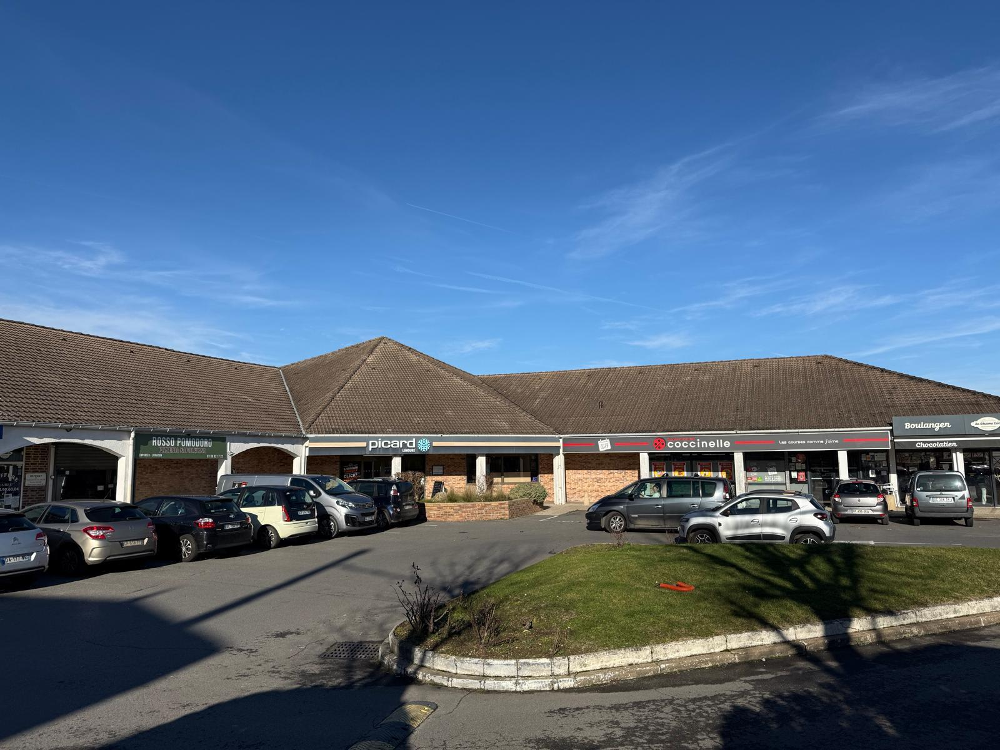
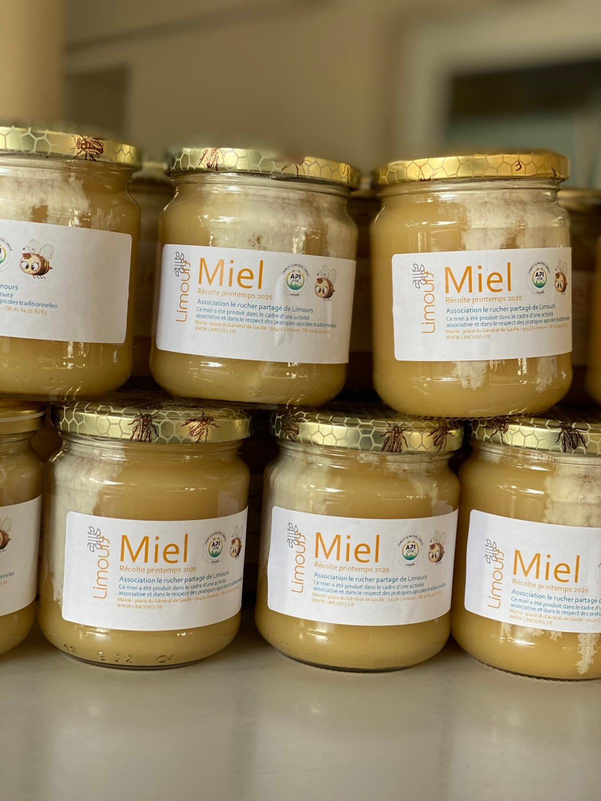
Alors que Limours se situe à proximité du pôle scientifique
international du plateau de Saclay, l'équipe
Aimons Limours s'attachera à participer et à être partie
intégrante de ce territoire d'innovation.
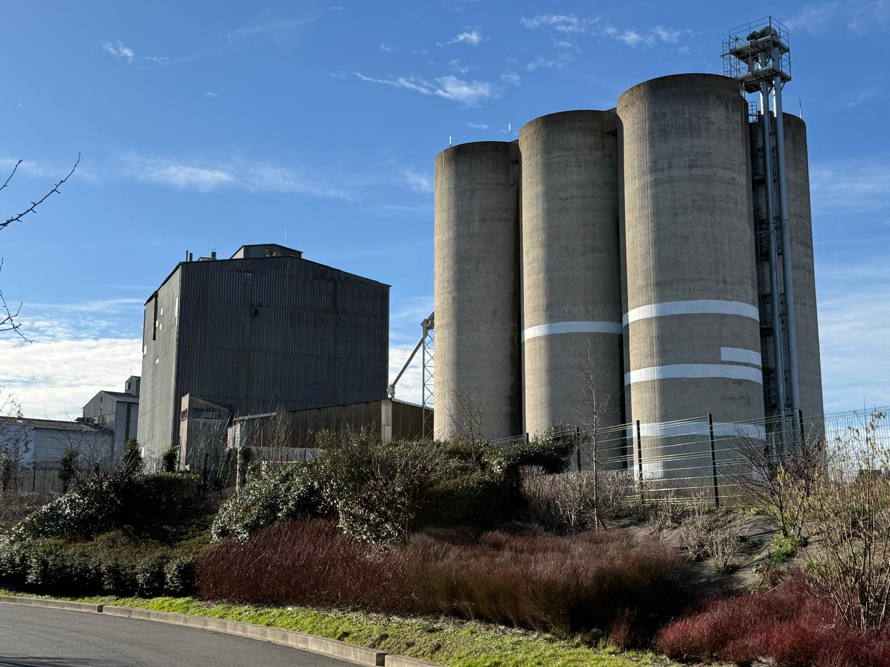
Gestion prospective et maîtrisée
Depuis plusieurs années, la France est rentrée dans une période de
chaos budgétaire. Un ancien ministre des Finances, tristement
célèbre, avait même accusé les communes d'en être pour partie
responsable.
Cette situation est purement intolérable ! Depuis 25 ans, la commune
a mis en place et suivi un plan prospectif financier équilibré à 5
ans. Cette démarche a permis, nonobstant une conjoncture très
tendue, la réalisation d'un nombre conséquent d'équipements utiles
et fonctionnels sans augmentation des impôts locaux.
La gestion financière n'est pas une fin en soi.
Mais dans l'administration d'une collectivité, il n'est pas de
bonnes politiques publiques sans une gestion financière
saine.
C'est cette exigence de rigueur et d'anticipation que nous voulons
poursuivre et renforcer pour l'avenir, afin de garantir une gestion
efficace et responsable des finances communales.
Baisse de la dotation globale de fonctionnement (en K€)
Environ 700 000 € de perte en 12 ans
Principale dotation de fonctionnement de l'État aux collectivités
territoriales, la Dotation Globale de Fonctionnement (DGF) n'a
cessé de baisser ces dernières années. Ce phénomène va s'accentuer
au gré du désengagement financier de l'État.
Extinction de la dette (en K€)
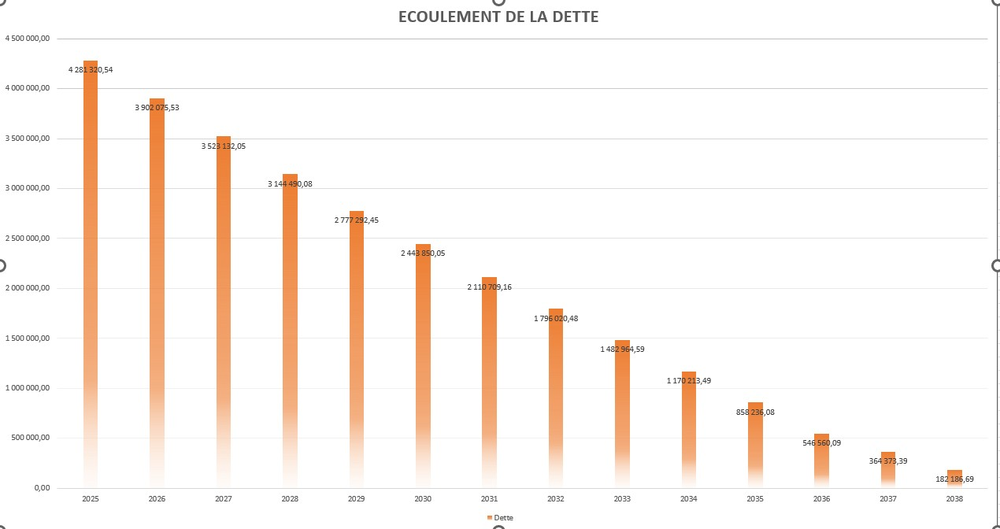
Cette méthode s'incarne par le développement de principes simples
et éprouvés dans le temps :
Recherche constante d'une optimisation des dépenses de
fonctionnement ;
Priorité donnée à l'autofinancement ;
Anticipation et programmation pluriannuelle ;
Recherche systématique de subventions et de nouvelles recettes ;
Renégociation et maîtrise constante de la dette ;
Mutualisation en partenariat avec la Communauté de Communes ou
directement avec des communes voisines.
10 nouveaux projets
Projet cœur de ville — Dans le cadre de la
concertation engagée au sein de l'atelier Ville collaborative de
l'Agora citoyenne, nous conduirons avec vous la réalisation d'un
aménagement du centre-ville de demain.
Sécurisation de l'arrêt de bus D988 — Dans le cadre
de la programmation d'entretien et de sécurisation des voiries, et
après le vote en conseil municipal, nous engagerons l'aménagement de
sécurité à proximité de l'arrêt de bus sur la départementale D988, au
droit de la rue des Fonds d'Armenon.
Cours Oasis — Mise en œuvre, dans la cour des écoles,
de projets de « cours Oasis » visant à lutter contre les effets de la
chaleur et de l'ensoleillement. Cette démarche permettra de favoriser
le bien-être ainsi que le confort des élèves en transformant les
espaces de récréation par un verdissement et la création de zones
d'ombre.
Cela s'inscrira dans l'adaptation, déjà engagée, des établissements
scolaires communaux aux enjeux climatiques actuels.
Pôle associatif du Saut du Loup — En lieu et place
des actuelles structures modulaires vieillissantes du Saut du Loup,
construction d'un nouveau pôle associatif d'une surface doublée et
dont les espaces seront réfléchis et organisés en concertation avec
les utilisateurs.
Médiathèque — En fonction des possibilités
financières à venir et dans le cadre du projet « Cœur de Ville », la
construction d'une médiathèque adaptée aux besoins d'aujourd'hui, et
située à l'arrière de l'église Saint-Pierre, est une option
envisageable. L'emplacement de l'actuelle bibliothèque pourrait être
alors valorisé permettant de réaliser une opération immobilière mixte
idéalement placée à proximité de la gare routière de la place Aristide
Briand.
Terrain synthétique multisports — Réalisation, en
coordination avec la Communauté de Communes du Pays de Limours, d'un
terrain synthétique multisports de dernière génération en remplacement
du vétuste terrain annexe. Cet équipement, tant attendu, permettra
d'obtenir une offre diversifiée et adaptée à la pratique en club et en
milieu scolaire.
Répare Café — Nous vivons dans un monde qui encourage
à la surconsommation. À peine abîmés ou en panne, nous jetons des
objets qui seraient parfaitement utilisables après une simple
réparation. Le « Répare Café » apprend, par un échange
intergénérationnel et participatif, à voir autrement ces mêmes objets
et à en redécouvrir la réelle valeur. Nous réhabiliterons la maison
communale, rue de Marcoussis, à cet effet, offrant ainsi une
expérience ludique, gratifiante et collective, pour des réparations
qui s'avèrent souvent très simples.
Réunion publique avec la Gendarmerie — Chaque année,
suite au bilan statistique présenté aux Maires du secteur, nous nous
engageons à organiser une réunion publique avec la Gendarmerie
permettant ainsi un échange direct avec les forces de l'ordre.
Réserve communale de prévention civile — Au travers
de cette responsabilité qui est la nôtre et dans un esprit de
participation citoyenne, nous porterons la proposition de création
d'une réserve communale de prévention civile. Celle-ci permettra à
tout Limourien qui souhaite s'engager, d'appuyer logistiquement les
autorités et la municipalité lors d'événements exceptionnels. Cette
réserve prodiguera un soutien et une assistance aux populations en cas
de sinistre.
Réhabilitation de l'ancienne gare — Réhabilitation et
transformation de l'ancienne gare en pôle « Cohésion sociale ».
Celui-ci regroupera l'ensemble des missions du Centre Communal
d'Action Sociale (CCAS) ainsi que celles de Nord-Ouest Autonomie (NOA)
qui veille à l'amélioration des conditions de vie des seniors et des
personnes en situation de handicap.
10 engagements
Nous renforcerons la fonction des trois trames (verte, bleue et noire)
avec les acteurs partenaires possédant les compétences techniques.
En partenariat avec l'Office National des Forêts (ONF) nous
développerons la mise en valeur de la forêt communale de la richesse
qu'elle peut offrir.
Capitalisant sur l'obtention du label 100 % EAC, nous poursuivrons
notre engagement en faveur de l'Éducation Artistique et Culturelle à
hauteur de ce qu'exige cette certification.
Alors que l'espérance de vie augmente avec un effet direct sur la
pyramide des âges, permettre aux seniors de se maintenir à domicile
constitue une priorité pour l'équipe Aimons Limours. Nous
nous engageons à continuer d'être acteurs auprès des professionnels
médicaux et paramédicaux locaux qui œuvrent en ce sens.
En conjointe concertation avec la Gendarmerie, nous poursuivrons
l'installation de la vidéoprotection, déjà engagée durant le précédent
mandat, sur les différents points stratégiques de la commune.
Projet porté depuis de nombreuses années par la commune, nous agirons
auprès de la Communauté de Communes, en vue de la concrétisation de la
voie cyclable reliant Limours à Saint-Rémy-lès-Chevreuse, déjà
partiellement réalisée depuis Boullay-les-Troux.
Dans le cadre du développement des voies cyclables, nous serons
acteurs des possibilités d'amélioration des schémas de circulation
douce.
Dans un souci de prospective, nous anticiperons les conséquences de la
loi pour l'Accélération de la Production d'Énergies Renouvelables
(APER) de 2023, afin d'accélérer l'implantation sur la commune de
panneaux photovoltaïques en auto-consommation collective.
Nous nous engageons à maintenir et accompagner les commerçants et
artisans qui favorisent le développement économique de notre
territoire. Ils sont aussi un pilier du lien social qui fonde notre
société.
La maîtrise des comptes publics restera le socle de notre action, au
service des projets et dans l'intérêt général.


 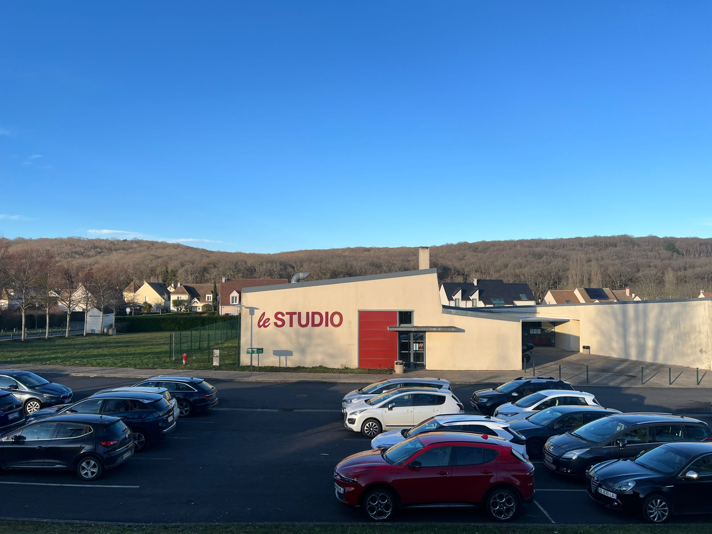
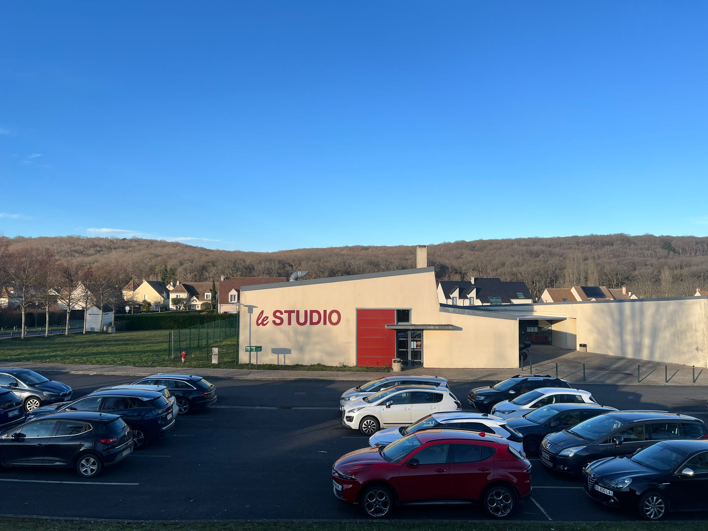


 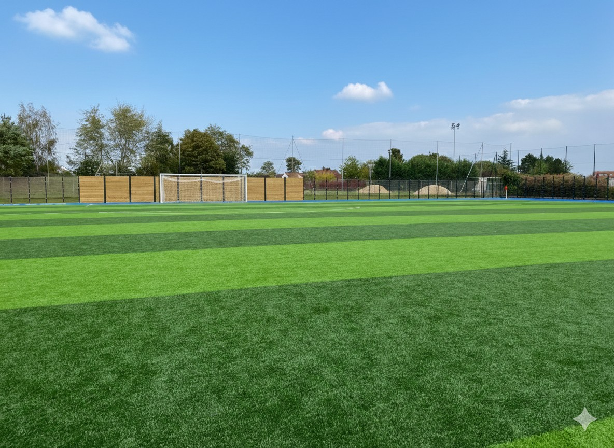
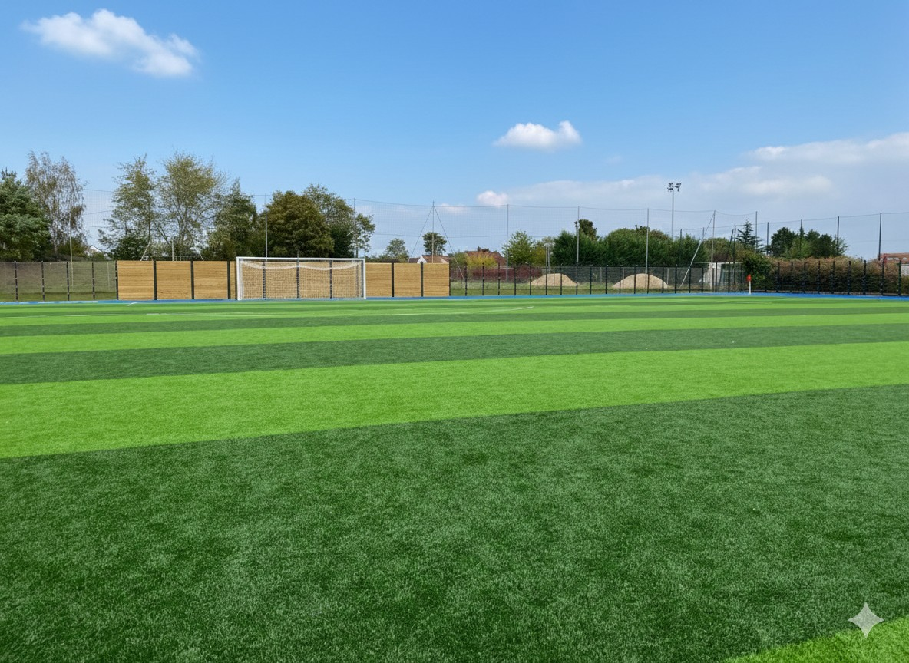


 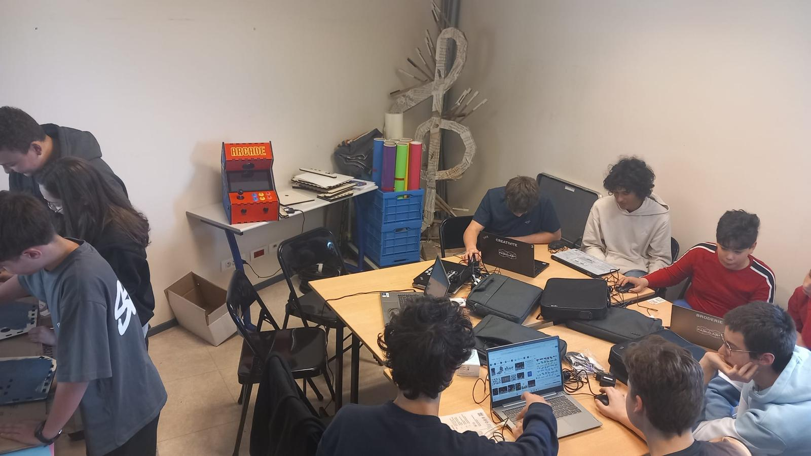
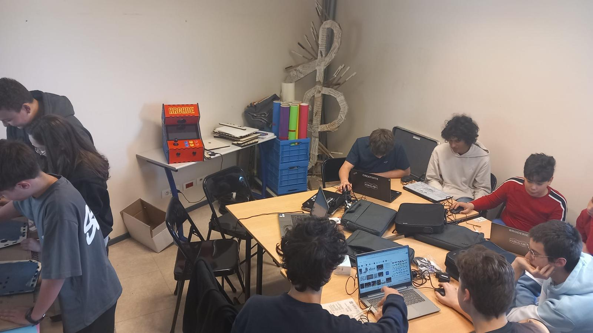